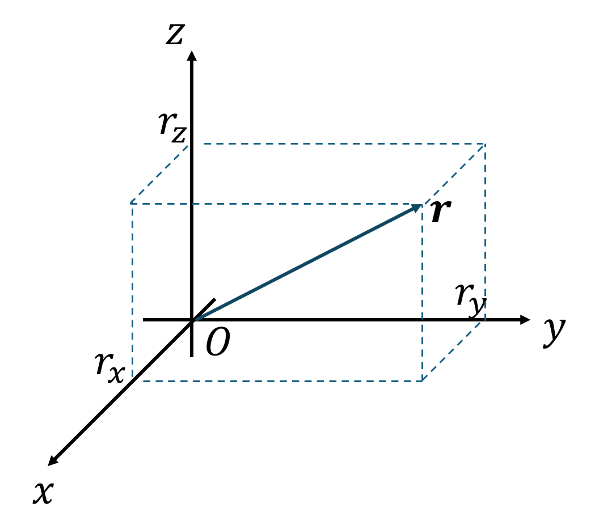
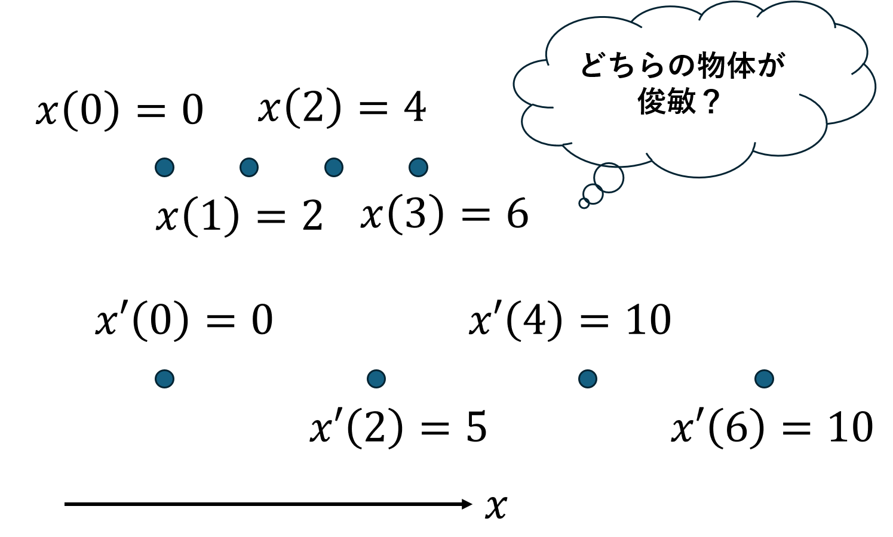

位置ベクトル、速度ベクトル
位置ベクトル

私たちが住むこの３次元空間の世界の位置を記述する方法として３次元直交座標というものがあります。空間のある任意の点を原点\(O\)として３つの直交した軸を取ります。それぞれを\(x\)軸、\(y\)軸、\(z\)軸という３つの名前があります。空間上の任意の点\(p\)を縦、横、高さのように３つの数字で表すことができます。
\[p(x,y,z)=p(1,2,-4)\]
この表記で点\(p\)は、\(O\)から、\(x\)軸正の方向に\(1\)、\(y\)軸正の方向に\(2\)、\(z\)軸負の方向に\(4\)進んだ点であるという意味になります。また
\[\boldsymbol{r}=(r_x,r_y,r_z)=(1,2,-4)\]
のように数字を並べたものをベクトルといいます。ベクトルでも原点からの位置を表すことができますね。ベクトルは、\(\boldsymbol{r},\vec{r}\)のように太文字や文字の上に矢印で表すことが多いです。ベクトル\(\boldsymbol{r}\)の大きさを
\[|\boldsymbol{r}|=\sqrt{r_x^2+r_y^2+r_z^2}\]
によって定義します。
\[\boldsymbol{e}_x=(1,0,0),\ \boldsymbol{e}_y=(0,1,0),\ \boldsymbol{e}_z=(0,0,1)\]
のように大きさ１のベクトルを単位ベクトルといいます。ベクトルの足し算や定数倍を
\[(a_x,a_y,a_z)+(b_x,b_y,b_z)\]
\[=(a_x+b_x,a_y+b_y,a_z+b_z)\]
\[k(a_x,a_y,a_z)=(ka_x,ka_y,ka_z)\]
によって定義します。\(y\)軸正の方向に\(2\)進むというのは、
\[\boldsymbol{e}_y+\boldsymbol{e}_y=2\boldsymbol{e}_y=(0,2,0)\]
\(y\)方向の単位ベクトルを2回足す。2倍するどちらでも計算できます。\(x\)軸方向に\(1\)進んだ後に\(y\)軸方向に\(2\)進む
\[\boldsymbol{e}_x+2\boldsymbol{e}_y=(1,2,0)\]
\(y\)軸方向に\(2\)進んだ後に\(x\)軸方向に\(1\)進む
\[\boldsymbol{e}_y+2\boldsymbol{e}_z=(1,2,0)\]
どちらも同じ計算結果となります。
平均の速度

物体が時間\(t\)によって位置が変わる場合を考えます。1次元の運動で例えば、位置\(x\)を時間の関数\(x(t)\)とみましょう。
\[x(1)=2,\ x(2)=4,\ x(3)=6,\cdots\]
というような運動をする物体の俊敏さを表す物理量を考えます。より大きく移動した方が運動しているように見えますが、時間をかけて遠くへ移動したのであれば俊敏とは言えません。そこで、平均速度\(\bar{v}_x\)を時間当たりの移動距離によって定義します。
\[\bar{v}_x(t)=\frac{x(t+\varDelta t)-x(t)}{\varDelta t}\]
によって定義します。正確には、時間\(t\)から\(t+\varDelta t\)における平均速度となります。\(\varDelta t\)は時間間隔です。\(t=2,\varDelta t=1\)とすれば、
\[\bar{v}_x(2)=\frac{x(3)-x(2)}{1}=2\]
速度が\(v=2\)と分かります。次の例のように時間間隔が異なる物体の運動
\[x'(2)=5,\ x'(4)=10,\ x'(6)=15,\ \cdots\]
でも時間間隔を\(\varDelta t=2\)とすることで、
\[\bar{v}'_x(2)=\frac{x'(4)-x'(2)}{2}=2.5\]
運動する物体の俊敏さを数値として比較できます。このように一定の速度でまっすぐ進む運動を等速直線運動といいます。一般に三次元で速度\(\boldsymbol{v}\)を
\[\bar{\boldsymbol{v}}(t)=\frac{\boldsymbol{x}(t+\varDelta t)-\boldsymbol{x}(t)}{\varDelta t}\]
と定義します。
先ほどの例では\(x\)軸に沿った運動になっていますが、
\[\boldsymbol{x}(0)=(2,0,1)\]
\[\boldsymbol{x}(1)=(3,0,3)\]
\[\boldsymbol{x}(2)=(4,0,5)\]
\[\boldsymbol{x}(3)=(5,0,7)\]
\[\vdots\]
このような運動をする物体も等速直線運動です。位置ベクトルは、
\[\boldsymbol{x}(t)=(1,0,2)t+(2,0,1)\]
と表されます。これは\(t\)をパラメータとする直線の方程式です。速度を計算すれば、
\[\bar{\boldsymbol{v}}(t)=\frac{\boldsymbol{x}(t+\varDelta t)-\boldsymbol{x}(t)}{\varDelta t}=(1,0,2)\]
速度が時間に依らない定ベクトル(時間に依らない一定のベクトル)となります。一般に定ベクトル\(\boldsymbol{x}_0,\ \boldsymbol{v}_0\)について、
\[\boldsymbol{x}(t)=\boldsymbol{v}_0t+\boldsymbol{x}_0\]
で表される運動を等速直線運動といいます。
\[\boldsymbol{x}(t+\varDelta t)-\boldsymbol{x}(t)=\{\boldsymbol{v}_0(t+\varDelta t)+\boldsymbol{x}_0\}-\boldsymbol{v}_0t+\boldsymbol{x}_0\]
\[=\boldsymbol{v}_0\varDelta t\]
以上から、
\[\bar{\boldsymbol{v}}(t)=\frac{\boldsymbol{x}(t+\varDelta t)-\boldsymbol{x}(t)}{\varDelta t}=\boldsymbol{v}_0\]
等速直線運動では常に速度は定ベクトルとなります。
速度
落下する物体の運動が\(y(t)=-5t^2\)で与えられたとしましょう。落下した瞬間はほぼ止まっていますが、時間経過とともに早くなる運動です。この物体の\(t=2\)での速度を求めてみましょう。
\[y(2)=-20,\ y(3)=-45\]
なので、時間間隔\(\varDelta t=1\)の時は、
\[v_y(2)=\frac{y(3)-y(2)}{1}=-25\]
時間間隔を\(\varDelta t=0.1\)としてみましょう。
\[y(2)=-20,\ y(2.1)=22.05\]
\[v_y(2)=\frac{y(2.1)-y(2)}{0.1}=-20.5\]
このように時間間隔に依存して、速度\(v_y(2)\)の値が異なってしまいます。物体の俊敏さだけを見たい物理量として速度を定義したのに時間間隔\(\varDelta t\)によって速度の値が変わってしまうのはよくありません。そこで、時間間隔\(\varDelta t\)をどこまでも小さくしていき、\(t=2\)での速度を決定していきます。
\[y(2+\varDelta t)-y(2)=-5(2+\varDelta t)^2+20=-20\varDelta t-5\varDelta t^2\]
\[v_y(2)=\frac{y(2+\varDelta t)-y(2)}{\varDelta t}=-20-5\varDelta t\]
\(\varDelta t\)を\(0\)に近づけていけば、
\[v_y(2)=-20\]
と求まります。この操作を微分といいます。関数\(x:t\mapsto x(t)\)の変数\(t\)による微分を
\[\frac{dy(t)}{dt}=\lim_{\varDelta t\to 0}\frac{y(t+\varDelta t)-y(t)}{\varDelta t}\]
により定義します。\(\lim\)は極限を表します。\(\varDelta t\to0\)と書いてあれば、\(\varDelta t\)を\(0\)に近づけ続けます。基本的に速度は微分を用いて計算します。同じ例で、\(x(t)=-5t^2\)の微分は、
\[\frac{dy(t)}{dt}=\lim_{\varDelta t\to 0}\frac{-5(t+\varDelta t)^2-(-5t^2)}{\varDelta t}\]
\[=\lim_{\varDelta t\to0}(-20t-5\varDelta t)=-20t\]
つまり\(v_{y}(t)=-20t\)と分かります。微分の表記法は様々で
\[\frac{dy}{dt},\ \frac{dy}{dt}(t),\ \frac{d}{dt}y,\ \dot{y}\]
などがあります。\(\dot{y}\)と書かれた場合には何を変数として\(y\)を微分しているか文脈で判断する必要があるので注意しましょう。位置ベクトル\(\boldsymbol{r}\)に対して速度ベクトル\(\boldsymbol{v}(t)\)を
\[\boldsymbol{v}(t)=\frac{d\boldsymbol{r}(t)}{dt}=\lim_{\varDelta t\to0}\frac{\boldsymbol{r}(t+\varDelta t)-\boldsymbol{r}(t)}{\varDelta t}\]
によって定義します。
\[\boldsymbol{r}(t+\varDelta t)-\boldsymbol{r}(t)\]
\[=(r_x(t+\varDelta t)-r_x(t),r_y(t+\varDelta t)-r_y(t),r_z(t+\varDelta t)-r_z(t))\]
\[\frac{\boldsymbol{r}(t+\varDelta t)-\boldsymbol{r}(t)}{\varDelta t}\]
\[=\left(\frac{r_x(t+\varDelta t)-r_x(t)}{\varDelta t},\frac{r_y(t+\varDelta t)-r_y(t)}{\varDelta t},\frac{r_z(t+\varDelta t)-r_z(t)}{\varDelta t}\right)\]
両辺を\(\varDelta t\to0\)の極限を取れば、
\[\frac{d\boldsymbol{r}(t)}{dt}=\left(\frac{dr_x}{dt},\frac{dr_y}{dt},\frac{dr_z}{dt}\right)\]
位置ベクトルの微分は各成分の微分をすれば求めることができます。速度が変化する運動では、平均の速度を用いると、時間間隔\(\varDelta t\)によって速度が変わってしまいますが、速度を使いたい場合、必ず位置に対して微分\(\frac{d}{dt}\)を行うわけではありません。\(A\)市から\(B\)市まで\(5\mathrm{km}\)離れています。車で6分かかったとしましょう。車の平均速度は
\[\bar{V}=\frac{5\mathrm{km}}{0.1\mathrm{h}}=50\ \mathrm{km\ h^{-1}}\]
と概算できます。\(20\mathrm{km}\)離れている\(C\)市へは、
\[\varDelta t=\frac{20\mathrm{km}}{\bar{V}}=0.4\mathrm{h}\]
24分くらいかかるだろうな。という概算に役立ちます。微分によって求めた速度\(V\)は時間の関数で信号待ちの時は、\(0\ \mathrm{km\ h^{-1}}\)ですし、直線の道では、ある瞬間\(60\ \mathrm{km\ h^{-1}}\)出ているというのが計算できます。スピードメーターに書いてある速さ(速度の大きさ)のことですね。